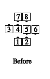
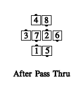
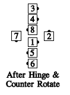
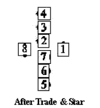
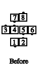
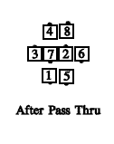
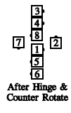
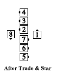
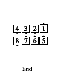

Chain Reaction
At C-1, the restrictions from the Advanced Program on the formations from which you may call Chain Reaction are removed. In effect, this adds quarter lines and a two-faced line or a wave between parallel mini-waves to the list of starting formations. For example:
- Two-faced line:
   
- Two-faced line between mini-waves:
    
© Copyright 1983, 1986-1988, 1995-2017 Bill Davis, John Sybalsky and CALLERLAB Inc., The International Association of Square Dance Callers. Permission to reprint, republish, and create derivative works without royalty is hereby granted, provided this notice appears. Publication on the Internet of derivative works without royalty is hereby granted provided this notice appears. Permission to quote parts or all of this document without royalty is hereby granted, provided this notice is included. Information contained herein shall not be changed nor revised in any derivation or publication.